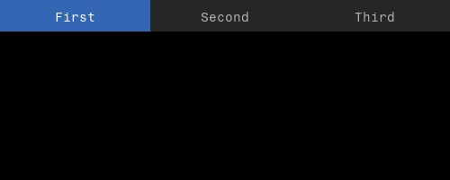
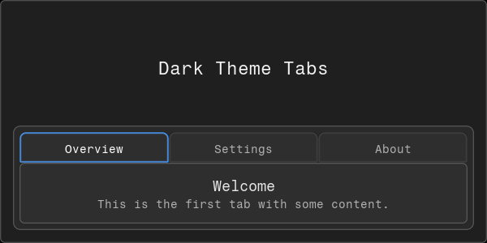
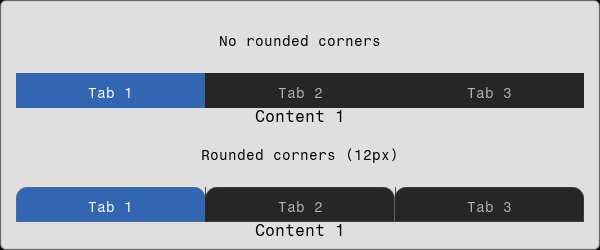
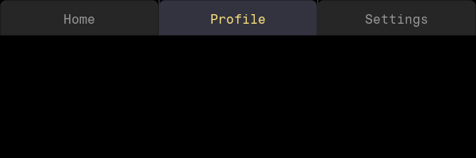

Tabs
Basic Usage
The Tabs component requires user-managed state to track the selected tab index.
using Fugl
selected_tab = Ref(1)
function MyApp()
Tabs(
[
("First", Fugl.Text("Content of first tab")),
("Second", Fugl.Text("Content of second tab")),
("Third", Fugl.Text("Content of third tab"))
];
selected_index=selected_tab[],
on_tab_change=(index) -> selected_tab[] = index
)
end
screenshot(MyApp, "tabs_basic.png", 500, 200);
Dark Mode Example
A dark-themed tabs interface using border color to indicate selection.
using Fugl
selected_tab_dark = Ref(1)
option1 = Ref(false)
option2 = Ref(true)
# Dark background colors
main_bg = Vec4{Float32}(0.12f0, 0.12f0, 0.12f0, 1.0f0)
tab_area_bg = Vec4{Float32}(0.16f0, 0.16f0, 0.16f0, 1.0f0)
container_bg = Vec4{Float32}(0.20f0, 0.20f0, 0.22f0, 1.0f0)
tab_bg_color = Vec4{Float32}(0.18f0, 0.18f0, 0.18f0, 1.0f0)
selected_border = Vec4{Float32}(0.3f0, 0.6f0, 0.95f0, 1.0f0)
unselected_border = Vec4{Float32}(0.25f0, 0.25f0, 0.25f0, 1.0f0)
function MyApp()
Container(
Column([
Fugl.Text("Dark Theme Tabs"; style=TextStyle(size_px=22, color=Vec4{Float32}(0.95f0, 0.95f0, 0.95f0, 1.0f0))),
Container(
Tabs(
[
("Overview",
Container(
Column([
Fugl.Text("Welcome"; style=TextStyle(size_px=18, color=Vec4{Float32}(0.9f0, 0.9f0, 0.9f0, 1.0f0))),
Fugl.Text("This is the first tab with some content."; style=TextStyle(size_px=14, color=Vec4{Float32}(0.7f0, 0.7f0, 0.7f0, 1.0f0)))
]);
style=ContainerStyle(background_color=tab_bg_color, padding=10.0f0)
)
),
("Settings",
Container(
Column([
Fugl.Text("Options"; style=TextStyle(size_px=18, color=Vec4{Float32}(0.9f0, 0.9f0, 0.9f0, 1.0f0))),
Container(
Column([
CheckBox(option1[]; label="Enable feature A", on_change=(v) -> option1[] = v),
CheckBox(option2[]; label="Enable feature B", on_change=(v) -> option2[] = v)
]);
style=ContainerStyle(
background_color=container_bg,
border_color=Vec4{Float32}(0.35f0, 0.35f0, 0.37f0, 1.0f0),
corner_radius=6.0f0,
padding=10.0f0
)
)
]);
style=ContainerStyle(background_color=tab_bg_color, padding=10.0f0)
)
),
("About",
Container(
Column([
Fugl.Text("Version 1.0"; style=TextStyle(size_px=14, color=Vec4{Float32}(0.7f0, 0.7f0, 0.7f0, 1.0f0)))
]);
style=ContainerStyle(background_color=tab_bg_color, padding=10.0f0)
)
)
];
selected_index=selected_tab_dark[],
on_tab_change=(index) -> selected_tab_dark[] = index,
style=TabsStyle(
tab_height=38.0f0,
selected_color=tab_bg_color,
unselected_color=tab_bg_color,
tab_corner_radius=6.0f0,
tab_border_width=2.0f0,
selected_border_color=selected_border,
unselected_border_color=unselected_border
)
);
style=ContainerStyle(
background_color=tab_area_bg,
padding=8.0f0,
corner_radius=8.0f0
)
)
]);
style=ContainerStyle(background_color=main_bg)
)
end
screenshot(MyApp, "tabs_dark.png", 600, 300);
Tab Corner Radius
Customize the appearance of tabs with rounded corners.
using Fugl
tab_state1 = Ref(1)
tab_state2 = Ref(1)
function MyApp()
Container(
Column([
Fugl.Text("No rounded corners"; style=TextStyle(size_px=14)),
Tabs(
[
("Tab 1", Fugl.Text("Content 1")),
("Tab 2", Fugl.Text("Content 2")),
("Tab 3", Fugl.Text("Content 3"))
];
selected_index=tab_state1[],
on_tab_change=(i) -> tab_state1[] = i,
style=TabsStyle(tab_corner_radius=0.0f0)
),
Fugl.Text("Rounded corners (12px)"; style=TextStyle(size_px=14)),
Tabs(
[
("Tab 1", Fugl.Text("Content 1")),
("Tab 2", Fugl.Text("Content 2")),
("Tab 3", Fugl.Text("Content 3"))
];
selected_index=tab_state2[],
on_tab_change=(i) -> tab_state2[] = i,
style=TabsStyle(tab_corner_radius=12.0f0)
)
])
)
end
screenshot(MyApp, "tabs_corners.png", 600, 250);
Text Style Customization
Customize the appearance of tab text.
using Fugl
tab_custom = Ref(2)
custom_text = TextStyle(size_px=16, color=Vec4{Float32}(0.6f0, 0.6f0, 0.6f0, 1.0f0))
custom_selected = TextStyle(size_px=16, color=Vec4{Float32}(1.0f0, 0.9f0, 0.5f0, 1.0f0))
function MyApp()
Tabs(
[
("Home", Fugl.Text("Home page content")),
("Profile", Fugl.Text("User profile")),
("Settings", Fugl.Text("Application settings"))
];
selected_index=tab_custom[],
on_tab_change=(i) -> tab_custom[] = i,
style=TabsStyle(
tab_height=45.0f0,
selected_color=Vec4{Float32}(0.2f0, 0.2f0, 0.25f0, 1.0f0),
unselected_color=Vec4{Float32}(0.15f0, 0.15f0, 0.15f0, 1.0f0),
text_style=custom_text,
selected_text_style=custom_selected,
tab_corner_radius=8.0f0
)
)
end
screenshot(MyApp, "tabs_text.png", 600, 200);